<title>Новый стиль шиномонтажа</title>
<meta name="claude:viewport-fit-sides" content="cover">
<link rel="preconnect" href="https://fonts.googleapis.com"><link rel="preconnect" href="https://fonts.gstatic.com" crossorigin>
<link href="https://fonts.googleapis.com/css2?family=Golos+Text:wght@400;500;600;700;800&family=JetBrains+Mono:wght@500;700&display=swap" rel="stylesheet">
<style>
/* Раскладка: узкая колонка текста; у каждого варианта слева телефон (вживую по кнопке), справа описание, кадры и вид на компьютере. */
:root{
  --bg:#f3f3f1;--surface:#ffffff;--ink:#141416;--muted:#62626a;--line:#dddcd8;--accent:#1f5bd8;--good:#16804a;--warn:#a6540a;--frame:#0b0b0c;
  --f-text:"Golos Text",system-ui,-apple-system,"Segoe UI",sans-serif;--f-mono:"JetBrains Mono",ui-monospace,Menlo,monospace;
}
@media (prefers-color-scheme:dark){:root:not([data-theme="light"]){--bg:#101012;--surface:#18181b;--ink:#efefec;--muted:#a1a1a8;--line:#2c2c31;--accent:#7aa2ff;--good:#5fd18f;--warn:#f0a35a;--frame:#000;color-scheme:dark}}
:root[data-theme="dark"]{--bg:#101012;--surface:#18181b;--ink:#efefec;--muted:#a1a1a8;--line:#2c2c31;--accent:#7aa2ff;--good:#5fd18f;--warn:#f0a35a;--frame:#000;color-scheme:dark}
*{box-sizing:border-box}
body{background:var(--bg);color:var(--ink);font:400 16px/1.55 var(--f-text);-webkit-font-smoothing:antialiased}
.wrap{max-width:1120px;margin:0 auto;padding-left:max(16px,env(safe-area-inset-left,0px));padding-right:max(16px,env(safe-area-inset-right,0px));padding-block:36px 64px}
h1,h2,h3{text-wrap:balance;margin:0}
h1{font:800 clamp(30px,6vw,46px)/1.05 var(--f-text);letter-spacing:-.03em}
h2{font:700 clamp(24px,4vw,32px)/1.1 var(--f-text);letter-spacing:-.02em}
h3{font:700 17px/1.3 var(--f-text)}
p{margin:0}
.lead{font-size:18px;max-width:62ch;color:var(--muted);margin-top:14px}
.lead b{color:var(--ink);font-weight:600}
a{color:var(--accent)}
.mono{font-family:var(--f-mono)}
img{display:block;max-width:100%;height:auto}

.before{margin-top:34px;display:grid;grid-template-columns:minmax(0,180px) minmax(0,1fr);gap:16px;align-items:start;padding:18px;border:1px solid var(--line);border-radius:16px;background:var(--surface)}
.before figure{margin:0}
.before .txt{grid-column:1/-1;display:flex;flex-wrap:wrap;gap:4px 12px;align-items:baseline}
.before .txt p{color:var(--muted);font-size:15px}
.shot{border-radius:12px;overflow:hidden;background:var(--frame);border:1px solid var(--line)}

.dir{margin-top:56px;padding-top:28px;border-top:1px solid var(--line);display:grid;grid-template-columns:330px minmax(0,1fr);grid-template-areas:"phone head" "phone info";gap:20px 36px;align-items:start}
.dir>.head{grid-area:head}.dir>.phone{grid-area:phone}.dir>.info{grid-area:info}
.phone{position:sticky;top:calc(16px + env(safe-area-inset-top,0px))}
.screen{position:relative;width:100%;aspect-ratio:390/844;border-radius:30px;overflow:hidden;background:var(--frame);border:8px solid var(--frame);box-shadow:0 0 0 1px var(--line)}
.screen img{position:absolute;inset:0;width:100%;height:100%;object-fit:cover;object-position:top}
.screen iframe{position:absolute;left:0;top:0;width:390px;height:844px;border:0;transform-origin:0 0;background:#000}
.ph-actions{display:flex;flex-wrap:wrap;gap:8px;margin-top:12px}
.btn{appearance:none;display:inline-flex;align-items:center;gap:8px;min-height:42px;padding:0 16px;border-radius:999px;border:1px solid var(--line);background:var(--surface);color:var(--ink);font:600 14.5px var(--f-text);text-decoration:none;cursor:pointer}
.btn.main{background:var(--ink);color:var(--bg);border-color:var(--ink)}
.btn:focus-visible{outline:2px solid var(--accent);outline-offset:2px}
.info{min-width:0;display:grid;gap:20px}
.head{display:grid;gap:8px}
.like{font:500 13px/1 var(--f-mono);color:var(--muted)}
.about{max-width:64ch;font-size:16.5px}
.facts{display:grid;grid-template-columns:repeat(3,minmax(0,1fr));gap:10px}
.fact{padding:12px 14px;border-radius:12px;background:var(--surface);border:1px solid var(--line)}
.fact small{display:block;font:500 12px/1.3 var(--f-mono);color:var(--muted);margin-bottom:4px}
.fact b{font-weight:600;font-size:15px;line-height:1.35;display:block}
.frames figcaption{display:grid;grid-template-columns:repeat(var(--n,4),minmax(0,1fr));gap:12px;margin-top:8px;font-size:13.5px;color:var(--muted);line-height:1.4}
.frames figcaption b{display:block;color:var(--ink);font:700 12.5px var(--f-mono)}
figure{margin:0}
.lbl{font:600 13px/1 var(--f-text);color:var(--muted);margin-bottom:8px}

.table-wrap{overflow-x:auto;margin-top:18px;border:1px solid var(--line);border-radius:14px;background:var(--surface)}
table{border-collapse:collapse;width:100%;min-width:720px;font-size:15px}
th,td{text-align:left;padding:12px 14px;border-bottom:1px solid var(--line);vertical-align:top}
tr:last-child td{border-bottom:0}
th{font:600 13px var(--f-text);color:var(--muted)}
td:first-child{font-weight:700;white-space:nowrap}
.chip{display:inline-block;font:600 12.5px/1 var(--f-text);padding:5px 8px;border-radius:999px;border:1px solid currentColor;margin-right:6px;white-space:nowrap}
.chip.good{color:var(--good)}.chip.warn{color:var(--warn)}
.rec{margin-top:56px;padding:24px;border-radius:18px;background:var(--surface);border:1px solid var(--line);display:grid;gap:14px}
.rec ul{margin:0;padding-left:20px;display:grid;gap:8px;max-width:70ch}
.note{font-size:14.5px;color:var(--muted);max-width:70ch}

@media (max-width:860px){
  .dir{grid-template-columns:minmax(0,1fr);grid-template-areas:"head" "phone" "info";gap:18px}
  .phone{position:static;max-width:320px}
  .facts{grid-template-columns:minmax(0,1fr)}
  .frames figcaption{grid-template-columns:repeat(2,minmax(0,1fr))}
  .before{grid-template-columns:minmax(0,120px) minmax(0,1fr)}
}
@media (prefers-reduced-motion:no-preference){.btn{transition:transform .3s cubic-bezier(.22,1,.36,1)}.btn:active{transform:scale(.98)}}
</style>

<main class="wrap">
  <h1>Три новых стиля в сайте</h1>
  <p class="lead">«Колесо», «Сканер» и «Частицы» сделаны в самом сайте вместо «Тёмного», с настоящей записью. Картинки ниже сняты с сайта демо <b>Шиномонтаж «Колесо»</b>. «Смотреть вживую» показывает анимацию в браузере: это макет, тот же 3D, что в сайте. На сервер пока ничего не выложено.</p>

  <section class="before" aria-labelledby="before-h">
    <div class="txt"><h3 id="before-h">Было</h3><p>«Тёмный»: серый фон, плоская шина, без движения</p></div>
    <figure class="shot">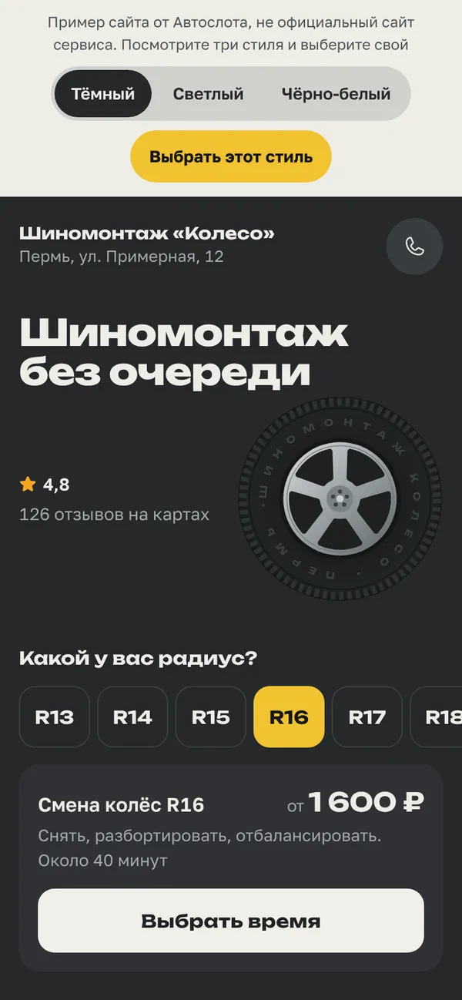</figure>
    <figure class="shot">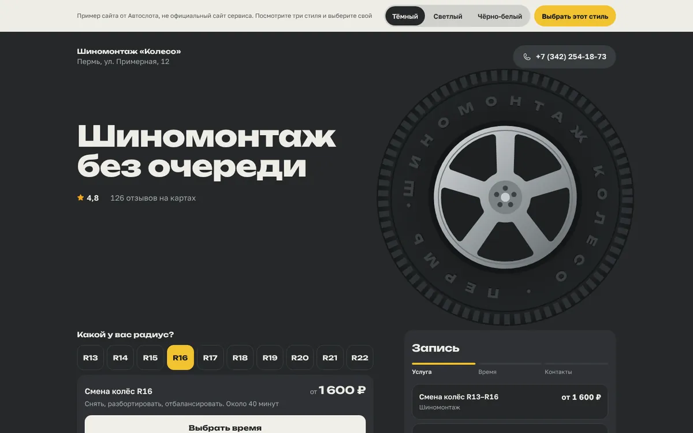</figure>
  </section>

  <section class="dir" id="koleso" aria-labelledby="h1d">
    <div class="head"><p class="like">3D-колесо собирается из деталей</p><h2 id="h1d">1. Колесо</h2></div>
    <div class="phone">
      <div class="screen" data-src="1-vitrina.html">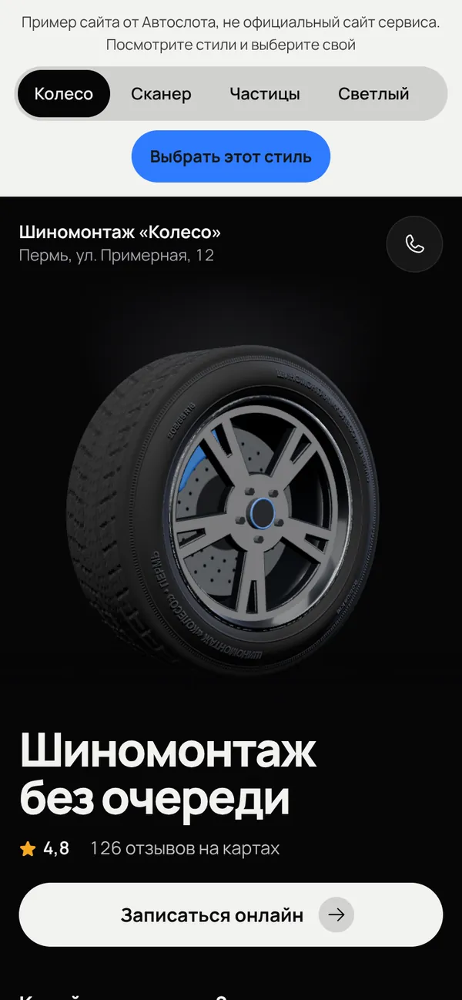</div>
      <div class="ph-actions"><button class="btn main" type="button" data-live>Смотреть вживую</button><a class="btn" href="1-vitrina.html" target="_blank" rel="noopener">На весь экран</a></div>
    </div>
    <div class="info">
      <p class="about">Колесо стало настоящим: сплошная резина с прорезанными канавками протектора, литой диск одним куском, тормозной диск со сверловкой, суппорт цвета сервиса, глянцевый пол. На боковине рельефом название сервиса и размер шины, размер меняется, когда выбираете радиус. Колесо крутится пальцем.</p>
      <div class="facts"><div class="fact"><small>Вес</small><b>Около 180 КБ кода, без картинок и моделей, грузится после страницы</b></div><div class="fact"><small>Касание</small><b>Крутится пальцем или мышкой, с инерцией</b></div><div class="fact"><small>Без анимации</small><b>Собранное колесо стоит под светом</b></div></div>
      <figure class="frames"><p class="lbl">Анимация по кадрам (снято с сайта)</p><div class="shot">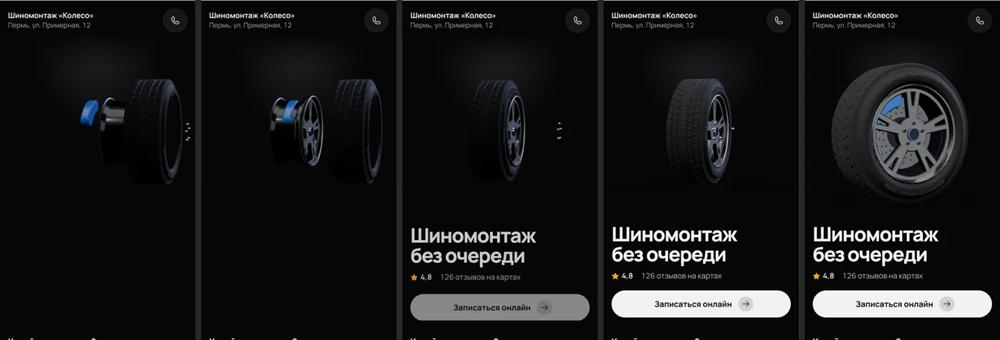</div>
        <figcaption style="--n:5"><span><b>0,3 с</b>Детали по оси: суппорт, диск, шина, гайки</span><span><b>0,9 с</b>Диск садится на тормоз</span><span><b>1,5 с</b>Шина надевается на диск</span><span><b>2,2 с</b>Гайки, загорается свет</span><span><b>3,4 с</b>Колесо разворачивается к вам</span></figcaption></figure>
      <figure><p class="lbl">На компьютере</p><div class="shot">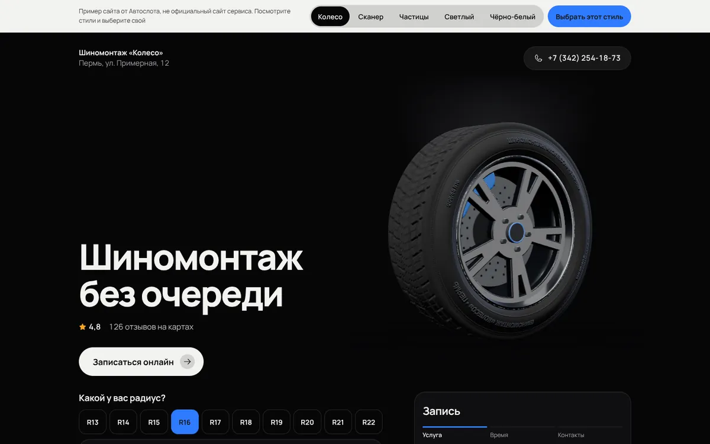</div></figure>
    </div>
  </section>
  <section class="dir" id="skaner" aria-labelledby="h2d">
    <div class="head"><p class="like">3D-машина на диагностическом стенде</p><h2 id="h2d">2. Сканер</h2></div>
    <div class="phone">
      <div class="screen" data-src="2-skaner.html">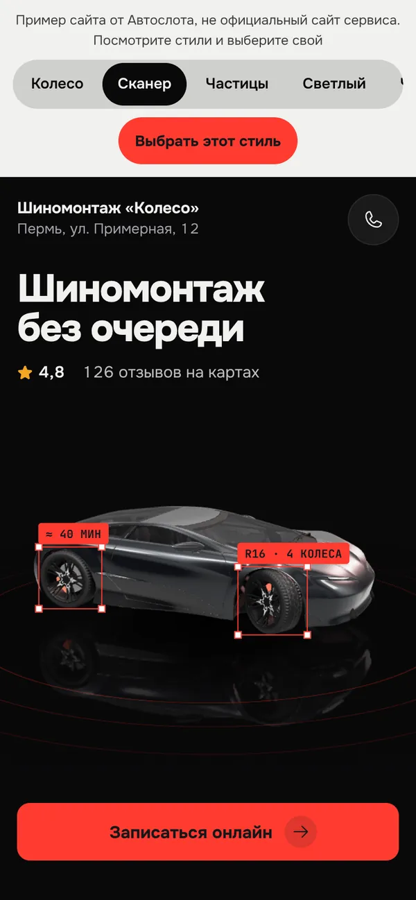</div>
      <div class="ph-actions"><button class="btn main" type="button" data-live>Смотреть вживую</button><a class="btn" href="2-skaner.html" target="_blank" rel="noopener">На весь экран</a></div>
    </div>
    <div class="info">
      <p class="about">Машина в 3D в тёмном зале. Луч проходит от носа к корме, за ним сетка 3D-скана, потом зажигается свет, и на колёсах появляются рамки: радиус и время работы. Выбрали другой радиус ниже, и луч проходит снова, подписи меняются. Машину можно крутить пальцем.</p>
      <div class="facts"><div class="fact"><small>Вес</small><b>Около 210 КБ кода и модель 2,8 МБ. Пока грузится, стоит затемнённая картинка 9-20 КБ</b></div><div class="fact"><small>Касание</small><b>Машина крутится пальцем, радиус запускает новый скан</b></div><div class="fact"><small>Модель</small><b>Концепт-кар без марки, лицензия CC BY 4.0, подпись автора внизу страницы</b></div></div>
      <figure class="frames"><p class="lbl">Анимация по кадрам (снято с сайта)</p><div class="shot">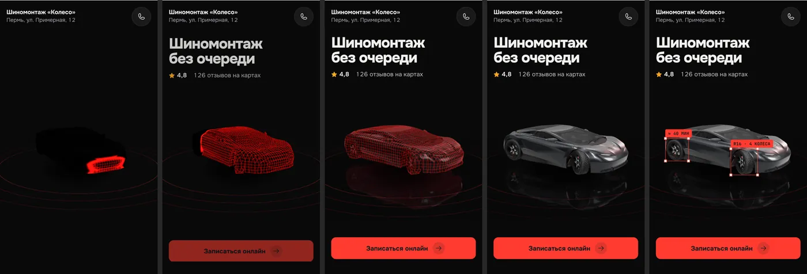</div>
        <figcaption style="--n:5"><span><b>0,8 с</b>Темно, луч начинает с носа</span><span><b>1,5 с</b>За лучом сетка скана</span><span><b>2,2 с</b>Вся машина в сетке</span><span><b>2,9 с</b>Свет, глянец и отражение</span><span><b>4 с</b>Рамки на колёсах: радиус и время</span></figcaption></figure>
      <figure><p class="lbl">На компьютере</p><div class="shot">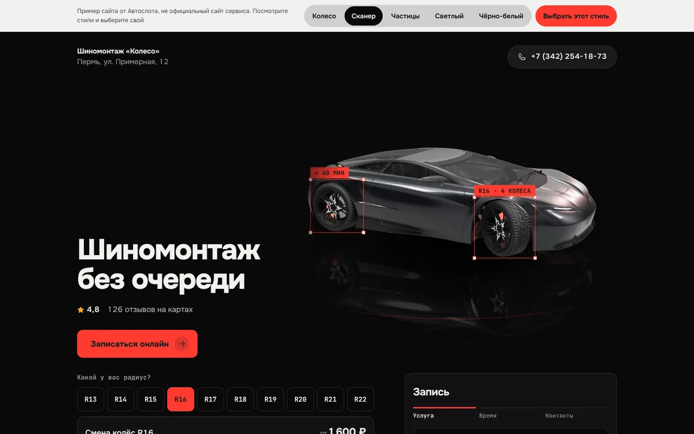</div></figure>
    </div>
  </section>
  <section class="dir" id="chasticy" aria-labelledby="h3d">
    <div class="head"><p class="like">шина из светящихся точек</p><h2 id="h3d">3. Частицы</h2></div>
    <div class="phone">
      <div class="screen" data-src="3-chasticy.html">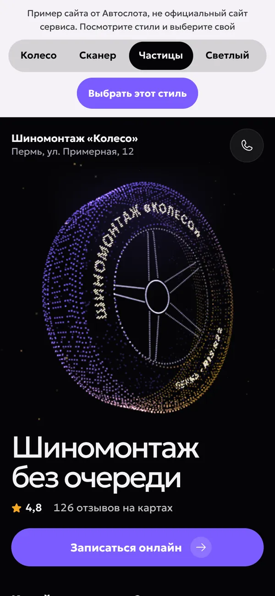</div>
      <div class="ph-actions"><button class="btn main" type="button" data-live>Смотреть вживую</button><a class="btn" href="3-chasticy.html" target="_blank" rel="noopener">На весь экран</a></div>
    </div>
    <div class="info">
      <p class="about">Шина из нескольких тысяч светящихся точек собирается из облака и медленно вращается. Название сервиса выложено точками на боковине, точки разбегаются от пальца. Цвет точек берётся из цвета сервиса.</p>
      <div class="facts"><div class="fact"><small>Вес</small><b>Около 5 КБ, без библиотек</b></div><div class="fact"><small>Касание</small><b>Точки разбегаются от пальца и возвращаются</b></div><div class="fact"><small>Без анимации</small><b>Шина из точек стоит, надпись читается</b></div></div>
      <figure class="frames"><p class="lbl">Анимация по кадрам (снято с сайта)</p><div class="shot">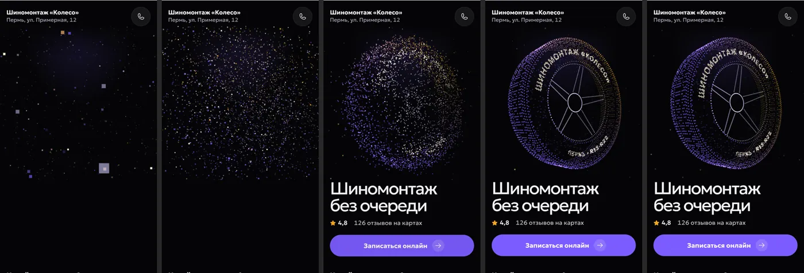</div>
        <figcaption style="--n:5"><span><b>0,3 с</b>Точки рассыпаны</span><span><b>1 с</b>Облако стягивается</span><span><b>1,8 с</b>Шина почти собралась</span><span><b>2,6 с</b>Надпись читается</span><span><b>4 с</b>Шина вращается</span></figcaption></figure>
      <figure><p class="lbl">На компьютере</p><div class="shot">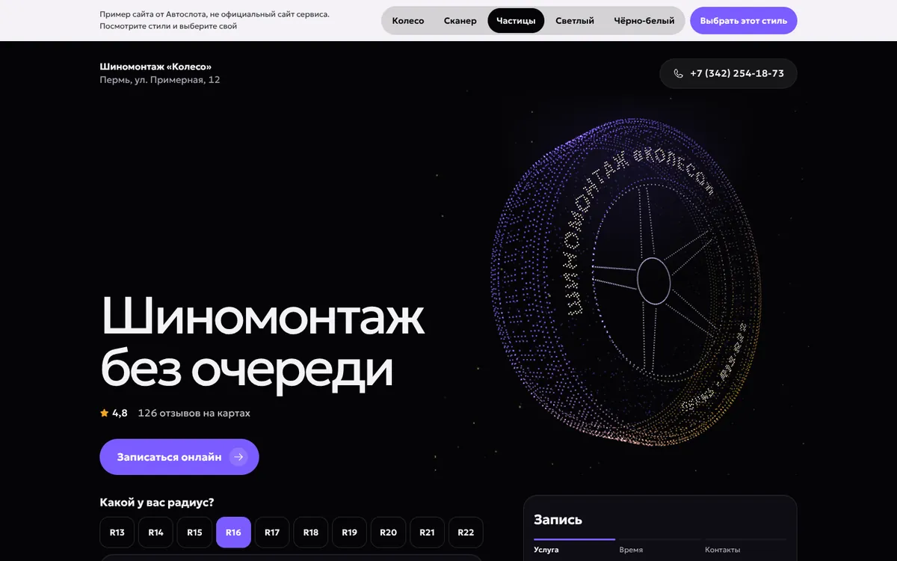</div></figure>
    </div>
  </section>

  <section class="rec" aria-labelledby="rec-h">
    <h2 id="rec-h">Что сделано и что дальше</h2>
    <ul>
      <li>В демо сверху теперь пять стилей: Колесо, Сканер, Частицы, Светлый, Чёрно-белый. Владелец может выбрать любой, это видно в админке. Сайты, у которых был выбран «Тёмный», теперь показываются в стиле «Колесо».</li>
      <li>Запись не менялась: радиус с ценой, выбор времени, контакты работают как раньше. Тесты, проверка типов и сборка проходят.</li>
      <li>Текст первого экрана (рейтинг, отзывы, «Открыто до») и шрифты поправим отдельно, как вы сказали.</li>
      <li>На сервер выложу только после вашего «да»: сначала ветка сервера, потом рабочая.</li>
    </ul>
    <p class="note">Проверено в браузере на ширине 390 и 1440, без горизонтальной прокрутки, в режиме «уменьшить движение» сцены стоят. Снимки сделаны без видеокарты, на телефоне движение будет плавнее. На настоящем дешёвом Android не проверял: если телефон не успевает, чёткость и отражения снижаются сами.</p>
  </section>
</main>

<script>
// Живой просмотр: в телефон загружается сам макет. Одновременно работает только один, чтобы не грузить телефон
let open = null;
const fit = (scr) => { const f = scr.querySelector("iframe"); if (f) f.style.transform = `scale(${scr.clientWidth / 390})`; };
document.querySelectorAll("[data-live]").forEach((b) => b.addEventListener("click", () => {
  const scr = b.closest(".phone").querySelector(".screen");
  if (open && open !== scr) { open.querySelector("iframe")?.remove(); open.querySelector("img").hidden = false; open.closest(".phone").querySelector("[data-live]").textContent = "Смотреть вживую"; }
  const cur = scr.querySelector("iframe");
  if (cur) { cur.src = scr.dataset.src; b.textContent = "Ещё раз"; return; }
  const f = document.createElement("iframe"); f.src = scr.dataset.src; f.title = "Живой макет"; f.loading = "eager";
  scr.querySelector("img").hidden = true; scr.append(f); fit(scr); open = scr; b.textContent = "Ещё раз";
}));
addEventListener("resize", () => open && fit(open));
</script>
